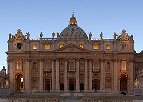

2. Sagrada Familia
Barcelona, España. Esta basílica modernista diseñada por Antoni Gaudí es famosa por su construcción que lleva más de 100 años, con una arquitectura única y detallada.

Ciudad del Vaticano, Roma, Italia. La iglesia más importante del catolicismo, con impresionante arquitectura renacentista y la cúpula diseñada por Miguel Ángel.
Barcelona, España. Esta basílica modernista diseñada por Antoni Gaudí es famosa por su construcción que lleva más de 100 años, con una arquitectura única y detallada.
París, Francia. Icono del gótico francés, famosa por sus vitrales, gárgolas y sus dos torres. Aunque sufrió daños por un incendio en 2019, sigue siendo un símbolo arquitectónico.

Estambul, Turquía. Originalmente una catedral bizantina, luego una mezquita y ahora un museo, famosa por su gran cúpula y mosaicos.

Moscú, Rusia. Conocida por sus cúpulas de colores brillantes y formas distintivas, es uno de los símbolos de Rusia.

Londres, Inglaterra. Famosa por su historia en la realeza británica, donde se celebran coronaciones, bodas y funerales reales.

Colonia, Alemania. Este edificio gótico es una de las estructuras más grandes del mundo, con impresionantes vitrales y torres.